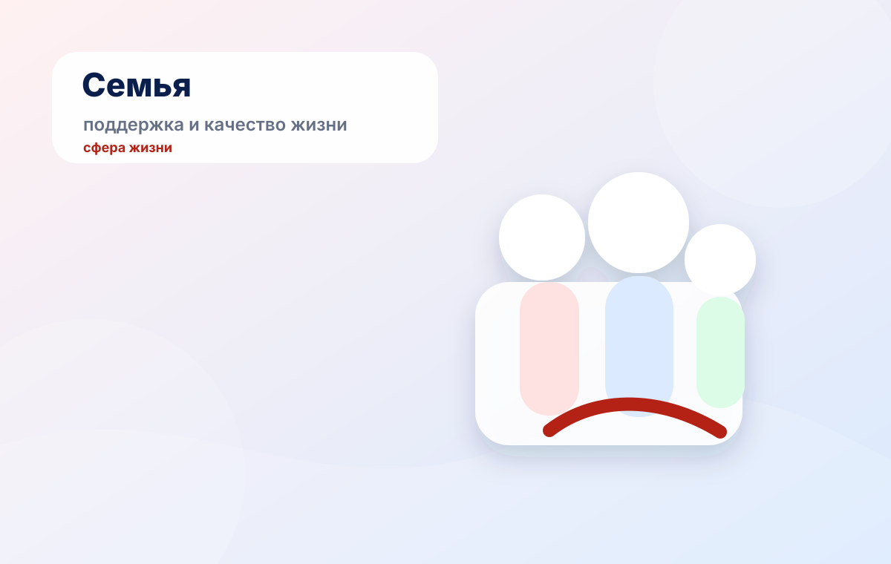

Зачем нужны
Чтобы сосредоточить ресурсы на ключевых задачах страны: здоровье, образовании, семье, инфраструктуре, экономике, технологиях и экологии.
Показываем, как национальные проекты работают на практике: от государственных целей и бюджета до результатов, которые касаются каждого.
Коротко о главном
Национальные проекты — это система государственных мер, которая связывает национальные цели развития с конкретными мероприятиями, финансированием, показателями и результатами для людей.
Чтобы сосредоточить ресурсы на ключевых задачах страны: здоровье, образовании, семье, инфраструктуре, экономике, технологиях и экологии.
Через федеральные и региональные мероприятия: от планирования и бюджета до контроля показателей и практического результата.
Смотреть официальные сайты, данные ВЦИОМ, «Электронный бюджет», ГАС «Управление», отчёты и научные исследования.
Как пользоваться сайтом
Сайт помогает не просто увидеть список проектов, а понять связь между государственными целями, сферами жизни, финансированием и реальными результатами.
Сферы жизни
Мы не делим сайт на отдельные темы. Сферы встроены в общую логику навигатора: каждая карточка показывает проблему, направление действий и ожидаемый практический эффект.
Интерактив
Ответьте на несколько вопросов. Сайт подберёт направление, которое больше связано с вашими интересами, и предложит перейти к соответствующей карточке.
Данные и аналитика
В этом блоке собраны ключевые показатели, которые помогают оценивать национальные проекты не на уровне общих слов, а через данные, источники и проверяемые факты.
О национальных проектах в среднем известно 73% россиян. Это показывает, что тема узнаваема, но требует понятного объяснения и удобной навигации.
Бюджет показывает, что национальные проекты — это не только цели, но и реальные ресурсы, мероприятия и контроль исполнения. Для пользователя это способ понять, как государственные решения переходят в практические действия.
Для анализа подходят «Электронный бюджет», ГАС «Управление», сайт Правительства РФ и официальные страницы национальных проектов.
Сайт объединяет разные типы источников, чтобы тема была понятной, но при этом доказательной.
Научные источники помогают показать нацпроекты как инструмент управления развитием, а не просто список отдельных мер.
Исследования позволяют связать финансирование, показатели и оценку эффективности реализации.
Важно смотреть, как меры отражаются на качестве жизни, доступности услуг и возможностях для граждан.
Практическая реализация
В этом разделе национальные проекты показаны через понятные жизненные ситуации: семья, здоровье, образование, городская среда, работа, экология и технологии.

Национальные проекты связаны с поддержкой семей, детей, образования, здоровья и доступной социальной инфраструктуры.
Оценивать результаты можно через учреждения, профилактику, цифровые сервисы и качество медицинской инфраструктуры.
Образование, кадры и профессиональное развитие связывают личный выбор человека с развитием экономики страны.
Изображения хранятся локально в папке images, поэтому сайт не зависит от внешней загрузки иллюстраций.
Период 2025–2030
С 2025 года система национальных проектов перешла к новому этапу. На официальных ресурсах представлены новые направления: семья, молодёжь и дети, инфраструктура для жизни, экологическое благополучие, экономика данных, кадры, технологии здоровья и другие.
Главные выводы
Пользователю важно видеть не только названия проектов, но и связь между целями, деньгами, действиями, показателями и результатами. Именно эту задачу решает навигатор.
Он делает информацию о национальных проектах понятной, легкодоступной и интересной для широкой аудитории, а также показывает, где можно самостоятельно проверить данные.
Команда
Проект подготовлен в рамках дисциплины «Основы российской государственности».
Данные и источники
Источники разделены по типам, чтобы пользователь мог проверить информацию и перейти к первичным данным.